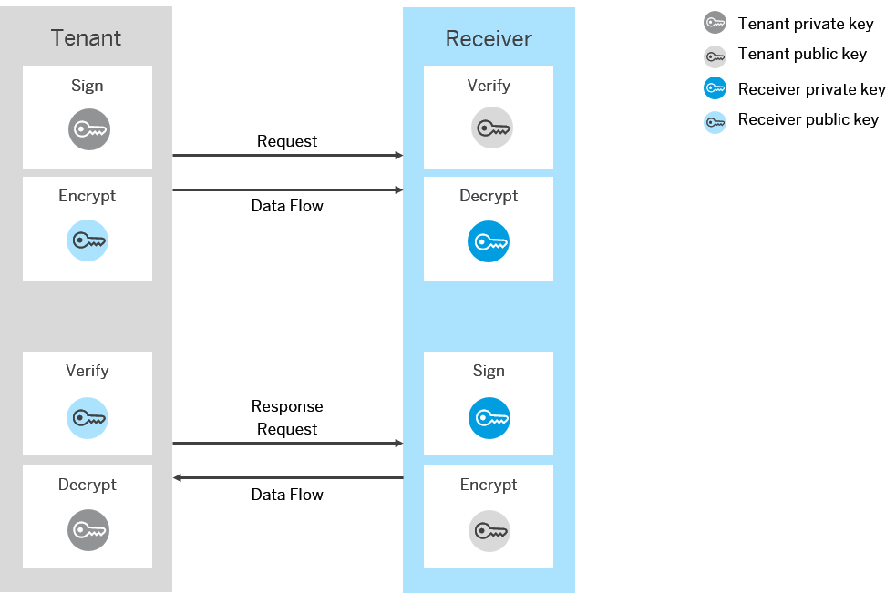

WS-Security Configuration for the Receiver SOAP 1.x Adapter
With a receiver channel you configure the outbound communication at the tenant’s side of the communication.
With regard to WS-Security in a sender channel you specify the following:
- How the tenant signs the payload of a message (to be verified by the receiver)
- How the tenant encrypts the payload of a message (to be decrypted by the receiver)
The following figure illustrates the setup of components.
The receiver SOAP 1.x adapter allows to configure the following combinations of message security methods:
- Signing a payload
- Signing and encrypting a payload
Signing and encryption (and verifying and decryption) is based on a specific set up of keys as illustrated in the figures. Moreover, for the message exchange, specific communication rules apply as been agreed between the administrators of the Web service client and Web service provider (for example, if certificates are to be sent with the message).
There are two options how these security and communication settings can be specified:
- Based on Policies in WSDL
Using this option, the security settings are specified as part of the receiver endpoint (within the endpoint WSDL) in elements as defined by the WS-Policy standard
That way you can specify, for example, within the WSDL that certificates for message level security are sent with the message.
For more information on the WS-Policy standard, see: http://docs.oasis-open.org/ws-sx/ws-securitypolicy/v1.3/os/ws-securitypolicy-1.3-spec-os.html
 .
. - Manual Configuration in Channel
Using this option, you specify the required settings in the channel.
The naming of the available attributes corresponds to the terminology used in the WS-Policy specification.
If you use manual configuration, a sub set of the options as defined by the standard is supported. For more information on the standard, see http://www.w3.org/TR/ws-policy/
and http://docs.oasis-open.org/ws-sx/ws-securitypolicy/200702/ws-securitypolicy-1.2-spec-os.pdf.